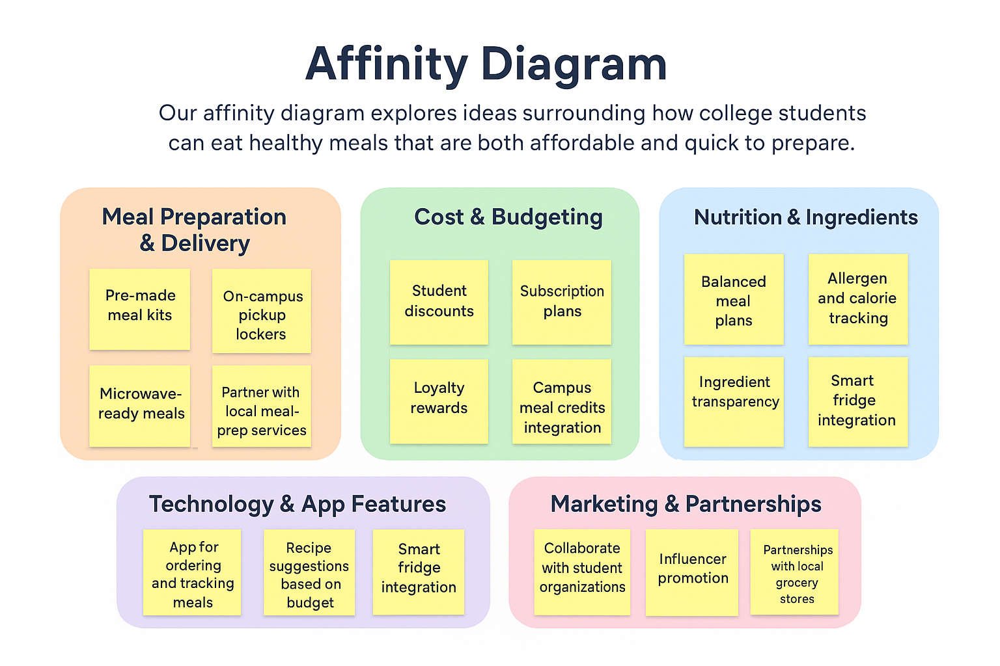
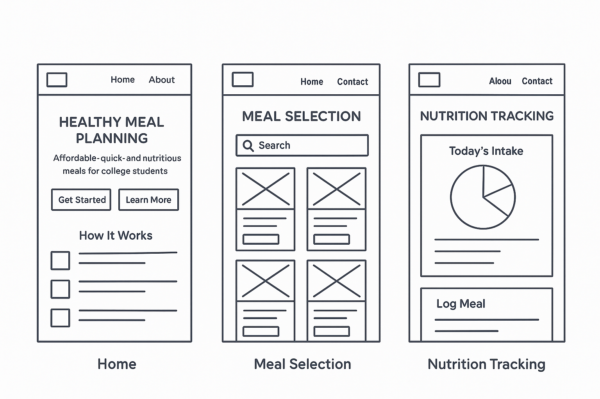

I’m a CIS student passionate about technology and design.
Check out my GitHub for examples of my code and web work.
Email: cwarr@email.sc.edu
College students need an affordable, quick way to eat healthy meals because dining hall food is often unhealthy and time-consuming.

Our affinity diagram explores ideas surrounding how college students can eat healthy meals that are both affordable and quick to prepare. We grouped over twenty ideas into five main clusters: Meal Preparation & Delivery, Cost & Budgeting, Nutrition & Ingredients, Technology & App Features, and Marketing & Partnerships. The diagram helped us visualize connections between convenience, affordability, and health, guiding us toward building an efficient app-based meal solution.

These sketches illustrate the design and flow of our website solution, showing the home page, meal selection interface, and nutrition tracking dashboard for college students seeking healthy, affordable meals.
Columbia, SC | (843) 287-6828 | cwarr@email.sc.edu | linkedin.com/in/connerwarr
University of South Carolina – Columbia, SC
Bachelor of Science in Computer Information Systems (Expected May 2028)
Relevant Coursework: Database Management, Networking Fundamentals, Introduction to Programming
House and Grounds Keeper — Riverbanks Zoo & Garden, Columbia, SC
August 2025 – Present
Bank Teller Intern — Carolina Bank, Hartsville, SC
February 2023 – May 2023